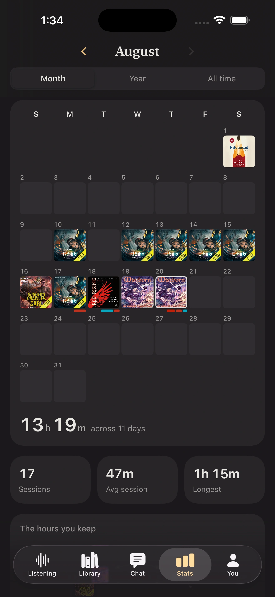

Real listening time
Booktrace records the minutes you actually spent listening, including the playback speed used for each session.
The hours you keep
See how much you listened, how often you returned, and which stories filled each day—not just another total disconnected from your library.
Track your listening
Booktrace records the minutes you actually spent listening, including the playback speed used for each session.
Start a live session or add one afterward. Your monthly total is built from individual moments you can inspect and edit.
Each listening day shows the books that were part of it, so the month remains connected to the stories behind the numbers.
What Booktrace measures
See monthly and all-time listening totals alongside session count, average session length, and longest session. Open a day to understand exactly where the total came from.
An audiobook has a published runtime, but that is not always how long it takes you. Booktrace keeps story duration and actual listening time separate, so both remain useful.
A streak can make a habit visible without becoming the point of the habit. Booktrace shows listening days and goals while keeping the books themselves at the center.
Your statistics connect back to finished books, current listens, genres, and narrators. That makes it possible to remember not only what you heard, but who performed it.